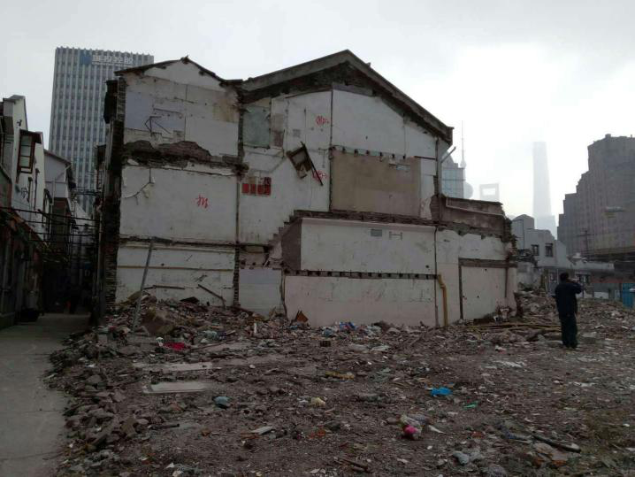
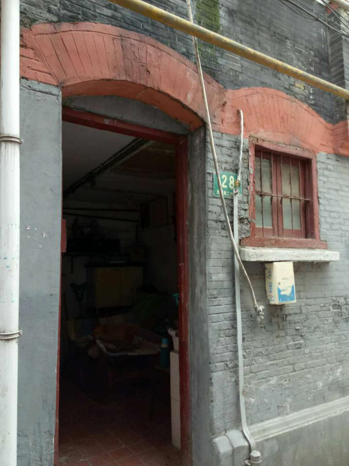
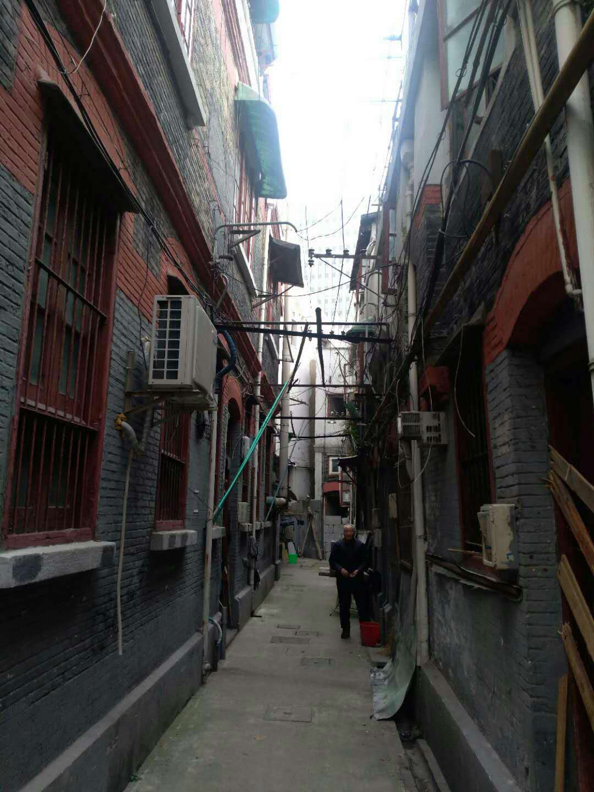

天潼路242弄目前已进入拆除工作中。建筑极可能为中国人所造，曾有日侨在这里居住。其中大部分已被拆除，只剩约20户人家。拆除原因为市政动迁、来拓宽马路。此弄堂马路对面也本是相同建筑，现因商业动迁全部拆除。

(已拆迁的弄堂)
根据在此居住了60年的93岁采访者的口述，曾有几户经济条件不是很好的日本家庭在此居住。他们与住在这里的中国人并无交流，各自生活。但是如果在外遇到站岗的日本人则必须叩首，否则就会被使用棍棒等武力威胁。

（弄堂里的居民住宅）

( 弄堂全貌)
返回主页